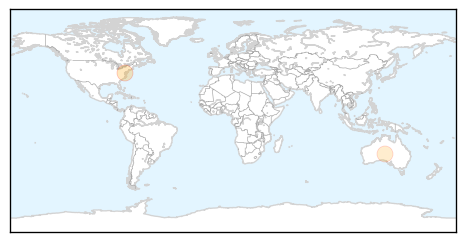
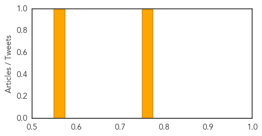

Meningitis
30-Day Web Trend
4 alerts, 0 warnings

30-Day Twitter Trend
1 alerts, 0 warnings
Article Locations

Article Confidences

Top Articles:
- 0.992
- Meningococcal disease in Niger (24 April 2015) - Niger
- 0.982
- Niger faces meningitis after Ebola Outbreak
- 0.982
- Spared Ebola, Niger faces meningitis
- 0.857
- ‘Closing the immunization gap’
- 0.818
- Listeria Sabra hummus a staple in many refrigerators including my own
- 0.741
- Final trial results of the world's most advanced malaria vaccine
- 0.708
- WHO launches African Vaccination Week in Zambia
- 0.612
- HPV Vaccine Produces Early Benefits for Teen Girls
- 0.560
- MRF Focuses on Action Meningitis on World Meningitis Day
Top Tweets:
-
No tweets found for Apr 27, 2015
Pertussis
30-Day Web Trend
2 alerts, 0 warnings
30-Day Twitter Trend
0 alerts, 0 warnings

Article Locations
Article Confidences
Top Articles:
Top Tweets:
-
No tweets found for Apr 27, 2015